Chapter 6 Daten importieren
Wir können in R nicht nur selbst Daten erzeugen, sondern selbstverständlich auch externe Dateien unterschiedlichen Typs einlesen. Dabei geschehen in der Regel zwei Dinge: 1) Die Informationen werden ausgelesen und 2) in einem Objekt (oftmals in Form eines Dataframes) gespeichert.
Im Rahmen dieses Kapitels schauen wir uns an, wie wir Dateien aus dem Internet herunterladen, in unseren Arbeitsordner verschieben und anschließend in R einlesen. Wir lernen außerdem, wie wir unser Working Directory setzen können.
Wir lernen drei verschiedene Wege zum Einlesen von Dateien kennen:
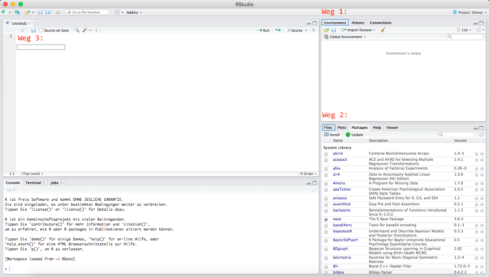
Die ersten beiden Wege nutzen die grafische Benutzeroberfläche der Entwicklungsumgebung RStudio, letzterer nutzt direkt Funktionen.
Exemplarisch schauen wir uns die drei Wege für die Datei neuro.csv an. Wir können mit den vorgestellten Wegen aber auch andere Dateiformate einlesen.
Was ist eine grafische Benutzeroberfläche?
Die Grafische Benutzeroberfläche, oder auch Benutzungsschnittstelle, wird häufig auch mit GUI (Graphical User Interface) abgekürzt. Durch diese kann man mit der Maus auf Symbole und andere Steuerelemente klicken anstatt Funktionen in der Konsole auszuführen (z.B. Weg 1 und Weg 2 zum Daten einlesen).
Die grafische Benutzeroberfläche in der Entwicklungsumgebung RStudio ist viel besser ausgebaut (als die des Basisprogramms R), weswegen wir diese auch nutzen wollen.
Was ist das Working Directory?
Mit dem Working Directory (WD; Arbeitsverzeichnis) legen wir u.a. fest, wo unser aktuelles R-Skript gespeichert wird und wo andere Objekte, die wir aus R exportieren (z.B. Grafiken), standarmäßig (während der aktuellen Sitzung) gespeichert werden.
Das WD müssen wir (in der Regel) in jeder R-Sitzung erneut festlegen.6.1 Vor dem Einlesen in R
In diesem Abschnitt schauen wir uns an, wie wir Dateien aus dem Internet herunterladen (z.B. aus moodle) und in unseren Arbeitsordner verschieben können. Wir sollten der Übersichtlichkeit halber für jedes neue Projekt einen neuen Ordner anlegen.
Die beiden Schritte schauen wir uns jeweils für das Windows- und Mac-Betriebssystem bzw. die Browser Google Chrome und Safari an.
Dieser Abschnitt ist optional. Wenn du bereits weißt, wie du Daten herunterlädst und verschiebst, kannst du diesen Abschnitt überspringen.
6.2 Windows
Im nachfolgenden Beispiel wird gezeigt, wie wir unter Benutzung des Browsers Google Chrome eine Datei aus einem Moodle-Kurs herunterladen und in unseren Arbeitsordner verschieben.
6.2.1 Datei herunterladen
Wir begeben uns in den entsprechenden Moodle-Kurs und wählen die Datei mit einem Rechtsklick an, wählen die Option Link speichern unter… sowie den gewünschten Zielordner zur Ablage aus.
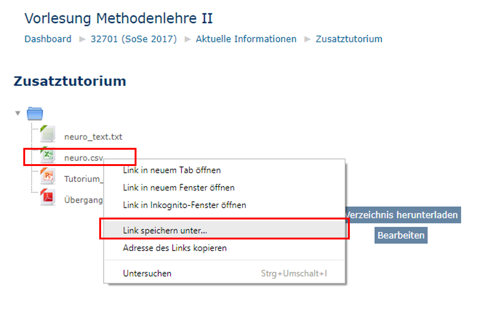
Sehr wichtig ist es, sich immer zu merken, in welchem Ordner die heruntergeladene Datei gespeichert wird. Es ist sinnvoll, die Datei bereits jetzt im Arbeitsordner zu speichern (in dem wir unser R-Skript später speichern möchten).
In Google Chrome können wir den Zielordner herausfinden, indem wir rechts oben auf die drei Punkte klickt und den Menüpunkt Downloads anwählen. Es öffnet sich ein neuer Tab im Browser, in dem wir die Option In Ordner anzeigen auswählen können.
6.2.2 In Arbeitsordner verschieben
Wir wählen die Datei mit einem Rechtsklick im Ordner aus und klicken dann auf die Option Ausschneiden. Im Gegensatz zu Kopieren entfernt das Ausschneiden die Datei auch aus dem ursprünglichen Ordner.
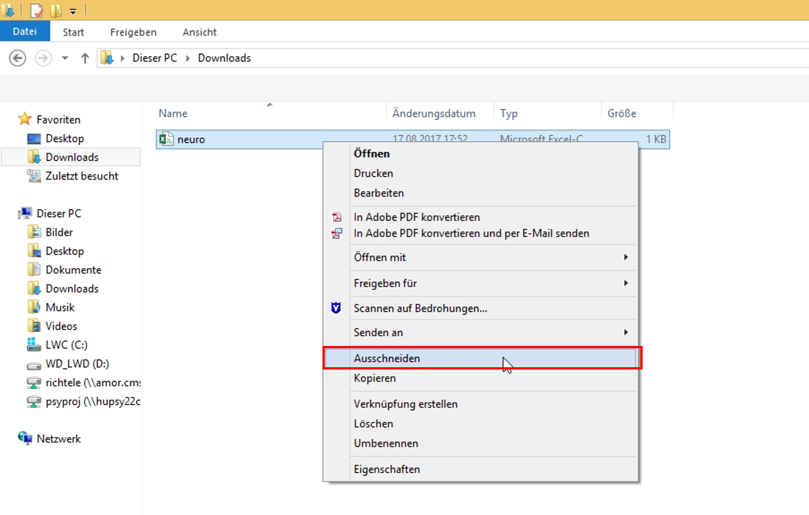
Als nächstes begeben wir uns in unseren Arbeitsordner (ggf. müssen wir diesen vorher noch erstellen). Wir machen einen Rechtsklick und wählen die Option Einfügen aus.
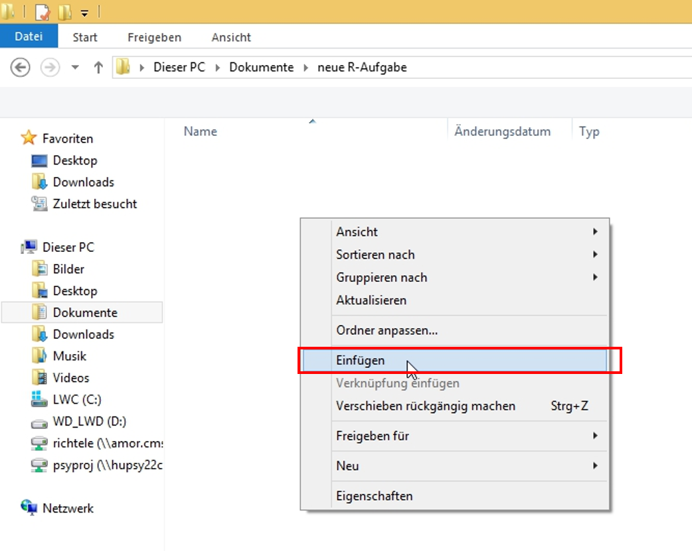
Jetzt befindet sich die Datei in unserem Arbeitsordner und wir können nun RStudio öffnen, um die Datei einzulesen.
6.3 Mac
Im folgenden Beispiel wird gezeigt, wie wir unter Benutzung des Browsers Safari eine Datei aus einem Moodle-Kurs herunterladen und in unseren Arbeitsordner verschieben.
6.3.1 Datei herunterladen
Wir begeben uns in den entsprechenden Moodle-Kurs und öffnen die Datei im Browser. Dann machen wir einen Rechtsklick (dabei darf nichts markiert sein) und klicken auf Seite sichern unter….
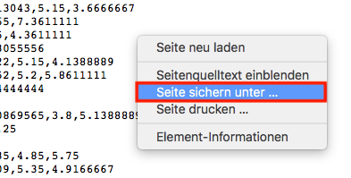
In dem Fenster, welches sich dann öffnet, müssen wir bei Format noch festlegen, dass wir den Quelltext der Seite herunterladen wollen. Wir könnten auch schon unseren Arbeitsordner als Zielordner festlegen.
Achtung: Manchmal werden wir beim Speichern gefragt, ob die Endung .txt angehängt werden soll (d.h. ob die Datei als Textformat gespeichert werden soll). Das sollten wir verneinen, da ansonsten unser (.csv-)Dateiformat geändert wird.
Oben rechts im Browser sehen wir einen nach unten zeigenden Pfeil . Wenn wir auf diesen klicken, können wir uns die heruntergeladene Datei im Finder anzeigen lassen. Standardmäßig werden heruntergeladene Dateien im Ordner Downloads gespeichert.
6.3.2 In Arbeitsordner verschieben
Wir machen einen Rechtsklick auf die Datei. Nun öffnet sich ein Menü, in welchem wir Kopieren auswählen.
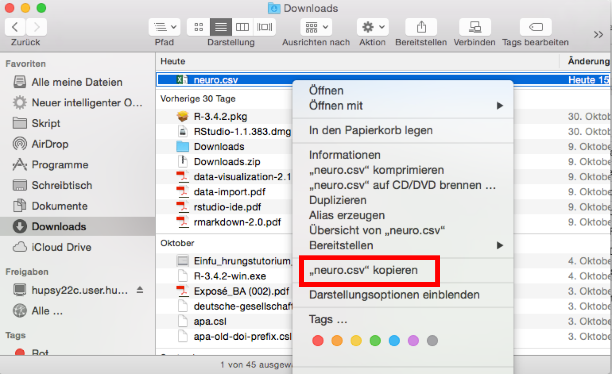
Als nächstes begeben wir uns in unseren Arbeitsordner (ggf. müssen wir diesen vorher noch erstellen). Wir machen einen Rechtsklick und wählen die Option Objekt einsetzen aus.
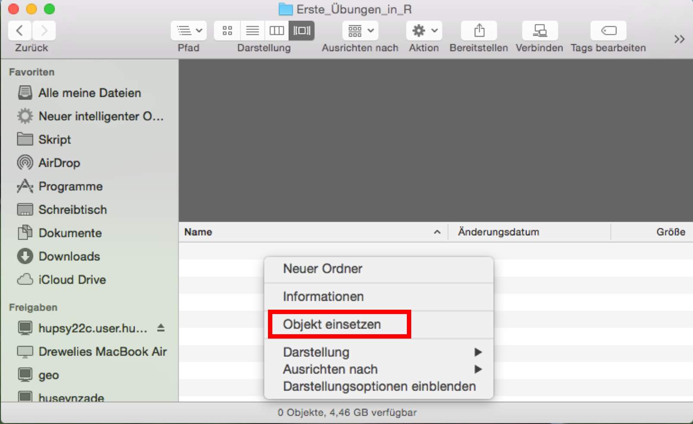
Die Datei ist nun im Arbeitsordner gespeichert; wir können sie nun auch aus dem Download-Ordner löschen. Jetzt öffnen wir RStudio, um die Datei einzulesen.
6.4 Weg 1: Environment > Import Dataset
Eine Variante, Daten in R ganz ohne Code zu importieren, ist es, das Icon Import Dataset zu nutzen. Dieses finden wir im rechten oberen Panel bei Environment.
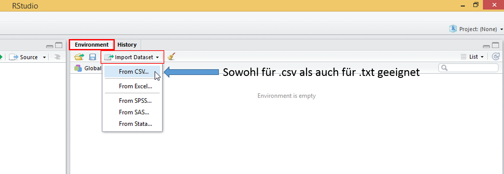
Nun klicken wir auf From CSV. Daraufhin öffnet sich ein Fenster, in dem wir verschiedene Optionen zum Einlesen haben.
Achtung: In neueren RStudio-Versionen gibt es die Optionen From Text (base) und From Text (readr) (anstatt zusammengefasst From CSV). Beides kann genutzt werden, um .csv-Dateien einzulesen. base ist ein Standardpaket, welches in R von Beginn an vorinstalliert ist. Um readr nutzen zu können, müssen wir erst das gleichnamige Paket herunterladen. Die nachfolgend genannten Schritte beziehen sich auf die Benutzung von From Text (readr); das Fenster bei From Text (base) sieht auch anders aus.
Nachdem wir eine Option ausgewählt haben, öffnet sich ein Fenster, in welchem wir die gewünschte Datei in unserem Arbeitsordner auswählen können.
Dann öffnet sich ein neues Fenster, welches eine Vorschau beinhaltet, die uns zeigt, wie die Datei mit den derzeitig festgelegten Optionen in R aussehen würde. Wenn es Probleme gibt (z.B. mit der Interpretation der Trennungszeichen), sehen wir das sofort an der Darstellung der Daten.
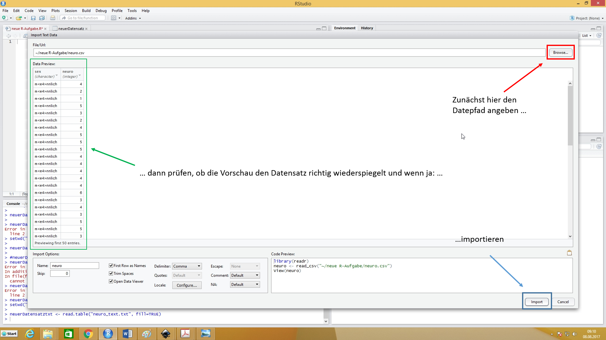
Zum Einlesen sind folgende Schritte nötig:
- Anklicken des Browse-Buttons. Daraufhin öffnet sich ein Fenster, in welchem wir die Datei auswählen können.
- Überprüfen der Vorschau, ob die Daten korrekt dargestellt werden. Die häufigsten Probleme bei der Repräsentation der Daten kommen durch die Trennungzeichen (zwischen den einzelnen Datenelementen) zustande. Diese können wir bei Delimiter ändern.
- Anschließend drücken des Import-Buttons.
Wenn die Datei neuro.csv erfolgreich eingelesen wurde, erscheint das neu erstellte Objekt neuro (oder welchen anderen Namen wir dem Objekt gegeben haben) im rechten oberen Panel bei Environment.
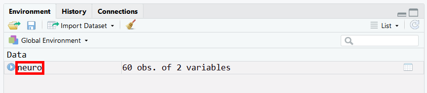
6.5 Weg 2: Files > Import Dataset
Schauen wir uns einen weiteren Weg an, mit der Benutzeroberfläche der Entwicklungsumgebung RStudio Dateien einzulesen.
Das Vorgehen hier ist weitestgehend analog zu Weg 1.
Wir klicken auf die Datei neuro.csv in unserem Arbeitsordner und dann auf die Option Import Dataset.
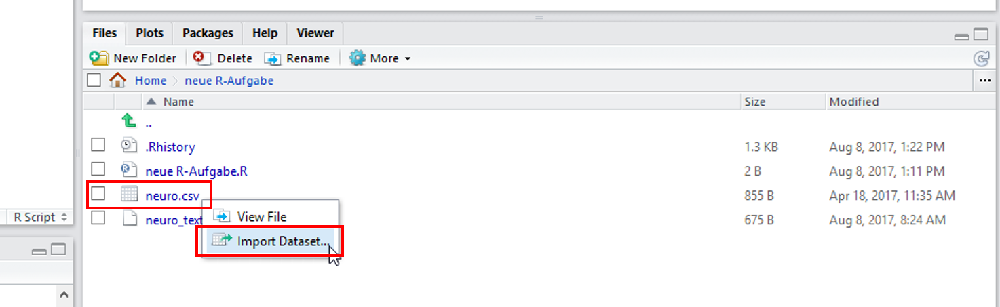
Es öffnet sich (weitestgehend) das gleiche Fenster wie in Weg 1.
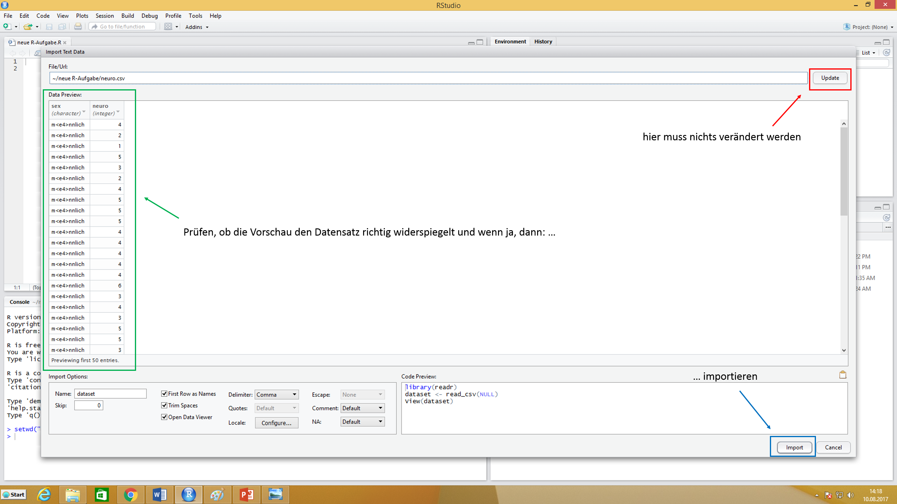
Wir haben hier mit Hilfe der Vorschau wieder die Möglichkeit vor dem Einlesen zu Überprüfen, ob die Datei von R richtig repräsentiert wird. Die meisten Probleme hängen mit den Trennungszeichen zwischen den einzelnen Datenelementen zusammen. Diese Option können wir unter Delimiter anpassen. Stimmt die Vorschau mit unseren Erwartungen überein, können wir rechts unten auf Importieren klicken.
Im Workspace sollten wir nun den eben eingelesenen Dataframe neuro finden.
6.6 Weg 3: Manuell Importieren mit Funktionen
Auch wenn Möglichkeiten existieren, Dateien mithilfe der Benutzeroberfläche von RStudio einzulesen, ist es ratsam, auch einmal selbst Funktionen zu nutzen. Für die meisten Arbeiten in R nutzen wir nämlich Funktionen.
Welche Funktion hierfür angebracht ist, hängt von der Struktur der Datei ab. Nachfolgend schauen wir uns an, welche Funktionen wir für .csv, .txt und .dat nutzen können.
# nutzbare Funktionen zum Einlesen von .csv, .txt. und .dat
daten <- read.table("Dateipfad/neuro.csv")
daten <- read.delim("Dateipfad/neuro.csv")
daten <- read.csv("Dateipfad/neuro.csv")Einen Dateipfad kopieren
Unter Windows können wir auf shift drücken und dann einen Rechtsklick auf die Datei machen. Nun öffnet sich ein Menü, in welchem wir Als Dateipfad kopieren auswählen. Wichtig dabei ist, dass wir noch alle \ (backslashes) aus dem kopierten Pfad in / (forwardslashes) ändern müssen.
Unter Mac können wir die Tastaturkürzel alt + cmd + c nutzen, um unseren Dateipfad zu kopieren.
Diese drei Funktionen sind sehr ähnlich aufgebaut. Sind haben aber teilweise unterschiedliche Voreinstellungen (sog. “Defaults”). Zum Beispiel nimmt read.csv() an, dass einzelne Datenelemente mit Kommata (Default: sep=",") getrennt werden. Dafür werden bei read.table() standarmäßig Spaltennamen nicht eingelesen (Default: header=FALSE).
Achtung: Alle Funktionsdefinitionen (mit Defaults) finden wir in der R-Dokumentation, die wir im unteren rechten Panel bei Help finden. Alternativ können wir sie auch mit der Hilfefunktion
?, z.B.?read.table, öffnen.
In Abhängigkeit der Speicherung der Dateien müssen wir manchmal den Parametern der Funktionen andere Argumente übergeben. Die zwei wichtigsten Parameter sind header und sep.
header- ob Spaltennamen übernommen werden sollen
TRUEoderFALSEmöglich- Wenn es Spaltennamen gibt, aber
header = FALSEfestgelegt ist, stehen diese in der ersten Zeile und die Spalten werden alternativ mitV1,V2,V3, … benannt.
sep- wie (angenommen wird, dass) einzelne Datenelemente getrennt sind
- u.a. Komma (
,), Semikolon (,) und Freizeichen () möglich - Dass wir hier etwas ändern müssen erkennen wir daran, dass nicht die gesamte Anzahl an Spalten im
R-Objekt vorhanden sind. Wenn wir uns das Objekt anschauen, dann sehen wir, mit welchem Zeichen die Elemente getrennt sind.
Achtung: Es kann dabei sein, dass unterschiedliche Personen zum korrekten Einlesen derselben Datei andere Argumenten nutzen. Das kann auf unterschiedliche Betriebssysteme oder Programme zum Öffnen der Dateien zurückzuführen sein.
Wenn wir den Dataframe eingelesen haben, erscheint er im Environment.
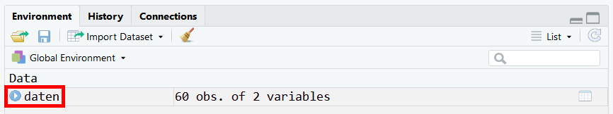
Probleme? Nutze Trial-and-Error!
Um in Erfahrung zu bringen, welche Argumente wir nutzen müssen, um die Daten korrekt einzulesen, können wir einen Trial-and-Error Ansatz verwenden:
Wir lesen die Datei erstmal ohne Spezifikation von Argumenten ein z.B. mit
read.table("Dateipfad").Dann schauen wir uns die Datei in
Rein und beurteilen, ob diese korrekt angezeigt wird. Schauen wir uns dazu beispielhaft einmal folgende .csv-Datei an:
| V1 |
|---|
| uni,satis_uni,residence,satis_location_uni |
| FU,5.5130602101329025,S,4.4057101367098666 |
| FU,7.233871516077954,Z,5.760182068473526 |
| HU,12.890984224974451,Z,7.205686095942897 |
| HU,8.691844540148681,Z,5.2505748559609025 |
| FU,5.136949092682058,N,5.421972864044606 |
- Die Datei wird scheinbar nicht korrekt angezeigt. Dabei fallen zwei Sachen ins Auge:
- Es gibt keine Spaltennamen bzw. stehen diese in der ersten Zeile.
- Daher müssen wird das Argument
header=TRUEnutzen, damit die Spaltennamen als solche übernommen werden.
- Daher müssen wird das Argument
- Es existiert nur ein Spalte.
- Die Daten aus verschiedenen Spalten werden alle in einer Zeile dargestellt. Wenn man sich das genauer anschaut sieht man, dass die einzelnen Daten jeweils mit einem Komma voneinander getrennt sind. Folglich müssen wird das Argument
sep=","benutzen, damit die Spalten korrekt getrennt werden.
- Die Daten aus verschiedenen Spalten werden alle in einer Zeile dargestellt. Wenn man sich das genauer anschaut sieht man, dass die einzelnen Daten jeweils mit einem Komma voneinander getrennt sind. Folglich müssen wird das Argument
- Jetzt lesen wir die Datei nochmal mit diesen Argumenten ein:
read.table("Dateipfad", header=TRUE, sep=",")
- Es gibt keine Spaltennamen bzw. stehen diese in der ersten Zeile.
| uni | satis_uni | residence | satis_location_uni |
|---|---|---|---|
| FU | 5.513060 | S | 4.405710 |
| FU | 7.233872 | Z | 5.760182 |
| HU | 12.890984 | Z | 7.205686 |
| HU | 8.691845 | Z | 5.250575 |
| FU | 5.136949 | N | 5.421973 |
| HU | 7.777371 | O | 6.593942 |
Nun wird die Datei korrekt dargestellt.
6.7 FAQ
Um Daten in R aufbereiten und bearbeiten zu können, muss man diese erst einmal einlesen können. Manchmal gestaltet sich das leider schwieriger als erwartet.
Im Folgenden wollen wir uns einige Methoden zum Einlesen gängiger Dateiformate in R anschauen. Das Dateiformat einer Datei erkennt man an seiner Endung.
Kurzbefehle zum Kopieren des Dateipfads
Windows
Wir drücken shift und machen dann einen Rechtsklick auf die Datei. Nun öffnet sich ein Menü, in welchem wir Als Dateipfad kopieren auswählen. Wichtig dabei ist, dass wir noch alle \ (backslashes) aus dem kopierten Pfad in / (forwardslashes) ändern müssen.
Mac
Wir klicken einmal auf die Datei (sodass sie markiert ist; dann ist sie blau hinterlegt) und führen dann den Kurzbefehl alt + cmd + C aus.
Für eine ausführlichere Anleitung zum Einlesen von Dateien in R gibt es ein eigenständiges Kapitel, in wir lernen, wie wir die Benutzeroberfläche von RStudio und Funktionen nutzen können.
6.7.1 .csv, .txt und .dat
Diese Dateiformate sind die am weitesten verbreiteten Tabellendateien. Alle drei können u.a. mit den folgenden Funktionen eingelesen werden:
read.table("Dateipfad")read.delim("Dateipfad")read.csv("Dateipfad")
Diese drei Funktionen sind sehr ähnlich aufgebaut. Sind haben aber teilweise unterschiedliche Voreinstellungen (sog. “Defaults”). Zum Beispiel nimmt read.csv() an, dass Elemente aus verschiedenen Spalten in einer Zeile jeweils mit einem Komma (sep=",") getrennt sind. Dafür werden bei read.table() ohne weitere Spezifikation die Spaltennamen nicht eingelesen (header=FALSE).
In Abhängigkeit der Speicherung der Dateien muss man teilweise noch weitere Argumente der Funktionen nutzen (d.h. nicht die Defaults einer Funktion nutzen).
header = TRUE(bei read.table)- Die richtigen Spaltennamen stehen sonst in der ersten Zeile und Spalten werden mit
V1,V2,V3etc. benannt.
- Die richtigen Spaltennamen stehen sonst in der ersten Zeile und Spalten werden mit
sep = ";"- … wenn die Elemente verschiedener Spalten in einer Zeile mit Semikolon getrennt sind
- Dass wir hier etwas ändern müssen erkennen wir daran, dass nicht die gesamte Anzahl an Spalten im
R-Objekt vorhanden sind. Wenn wir uns das Objekt anschauen, dann sehen wir, mit welchem Zeichen die Elemente getrennt sind.
fill = TRUE(bei read.table)- … wenn fehlende Werte mit
NA(R-Kodierung für Missings) befüllt werden sollen.
- … wenn fehlende Werte mit
Um in Erfahrung zu bringen, welche Argumente wir nutzen müsst, um die Daten korrekt einzulesen, können wir einen Trial-and-Error Ansatz verwenden:
Wir lesen die Datei erstmal ohne Spezifikation von Argumenten ein z.B. mit
read.table("Dateipfad").Dann schauen wir uns die Datei in
Rein und beurteilen, ob diese korrekt angezeigt wird. Schauen wir uns dazu beispielhaft einmal folgende csv-Datei an:
| uni | satis_uni | residence | satis_location_uni |
|---|---|---|---|
| FU | 5.513060 | S | 4.405710 |
| FU | 7.233872 | Z | 5.760182 |
| HU | 12.890984 | Z | 7.205686 |
| HU | 8.691845 | Z | 5.250575 |
| FU | 5.136949 | N | 5.421973 |
| HU | 7.777371 | O | 6.593942 |
- Die Datei wird scheinbar nicht korrekt angezeigt. Dabei fallen zwei Sachen ins Auge:
- Es gibt keine Spaltennamen bzw. stehen diese in der ersten Zeile.
- Daher müssen wird das Argument
header=TRUEnutzen, damit die Spaltennamen als solche übernommen werden.
- Daher müssen wird das Argument
- Es existiert nur ein Spalte.
- Die Daten aus verschiedenen Spalten werden alle in einer Zeile dargestellt. Wenn man sich das genauer anschaut sieht man, dass die einzelnen Daten jeweils mit einem Komma voneinander getrennt sind. Folglich müssen wird das Argument
sep=","benutzen, damit die Spalten korrekt getrennt werden.
- Die Daten aus verschiedenen Spalten werden alle in einer Zeile dargestellt. Wenn man sich das genauer anschaut sieht man, dass die einzelnen Daten jeweils mit einem Komma voneinander getrennt sind. Folglich müssen wird das Argument
- Jetzt lesen wir die Datei nochmal mit diesen Argumenten ein:
read.table("Dateipfad", header=TRUE, sep=",")
- Es gibt keine Spaltennamen bzw. stehen diese in der ersten Zeile.
| uni | satis_uni | residence | satis_location_uni |
|---|---|---|---|
| FU | 5.513060 | S | 4.405710 |
| FU | 7.233872 | Z | 5.760182 |
| HU | 12.890984 | Z | 7.205686 |
| HU | 8.691845 | Z | 5.250575 |
| FU | 5.136949 | N | 5.421973 |
| HU | 7.777371 | O | 6.593942 |
Nun wird die Datei korrekt dargestellt.
Achtung: Es kann dabei sein, dass unterschiedliche Personen zum korrekten Einlesen (derselben Datei) andere Argumenten nutzen. Das kann auf unterschiedliche Betriebssysteme oder Programme zum Öffnen der Dateien zurückzuführen sein.
Mehr Informationen zu den Funktionen und ihren Argumenten findet wir, wenn wir unter read.table in der R-Dokumentation (Help im unteren rechten Panel) nachschauen, oder indem wir ?read.table in die Konsole eingeben.
6.7.2 .xls und .xlsx
Diese Endungen gehören zum Programm Excel. Man muss externe Pakete installieren, um Excel-Dateien in R einlesen zu können.
Um .xlsx-Dateien einzulesen, nutzen wir das Paket openxlsx.
library(openxlsx)
daten <- read.xlsx("Dateipfad")Alternativ können wir das Paket readxl nutzen. Dieses ermöglicht uns sogar .xlsx- und .xls-Dateien einzulesen.
library(readxl)
daten <- read_xlsx("Dateipfad")6.7.3 .sav
Die Endung .sav wird z.B. für SPSS-Dateien genutzt wird. Hierfür muss man wieder ein zusätzliches Paket (z.B. foreign) runterladen, um SPSS-Dateien in R einlesen zu können.
library(foreign)
daten <- read.spss("Dateipfad", to.data.frame = TRUE)
# ohne to.data.frame wird eine Liste erzeugt6.7.4 Dateien via URL direkt aus dem Internet laden
Man kann Dateien auch direkt aus dem Internet laden mit Hilfe ihrer URL.
daten <- load(url("Webadresse"))Alternativ kann man die Datei auch herunterladen und dann in Abhängigkeit ihres Formats mit einem der oberen Befehle einlesen.
6.7.5 .R, .Rda und .Rmd
R-eigene Dateien kann man am besten öffnen, indem man auf sie klickt. Mac-Benutzer haben dabei manchmal das Problem, das sich die Datei per default in R öffnet.
- Auf Mac-Rechnern kann man
R-Studio folgendermaßen zum Standardprogramm zum Öffnen vonR-Dateien machen (siehe Abb. unten)- Rechtsklick auf die Datei
- auf Informationen klicken
- Unter Öffnen mit
R-Studio auswählen und auf Alle ändern… klicken
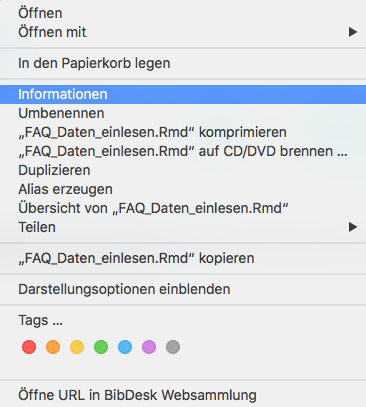
- Wenn man nur die eine
R-Datei regulär mitR-Studio öffnen möchte:- Rechtsklick auf die Datei
- Öffnen mit
- Anderem Programm …
R-Studio auswählen- unten mittig ein Häkchen in das Kästchen Immer öffnen mit setzen (wenn das nicht angezeigt wird, muss man erst unten rechts auf Optionen klicken)
- Öffnen
6.8 Weiterführende Hilfe
Falls wir ein seltener genutztes Dateiformat (z.B. Stata, JSON) in R einlesen möchten, können wir in dem Data Import Tutorial auf Datacamp nachschauen.
6.9 Übung
In diesem Abschnitt finden wir verschiedene Dateien, die wir zur Übung in R einlesen können. Wie wir dabei vorgehen (d.h. welchen Weg wir nutzen) bleibt ganz uns überlassen. Wenn wir möchten, können wir die Tipps nutzen, um die Aufgaben zu lösen. Zur Überprüfung finden wir mögliche Lösungswege und die eingelesenen Daten.
Wenn wir Hilfe beim Einlesen von Daten brauchen, können wir uns das ausführliche Kapitel dazu anschauen.
Wenn wir Probleme beim Installieren oder Laden von Paketen haben, können wir unseren FAQ-Eintrag dazu anschauen.
6.9.1 Übung 1: .csv
Lade dir von openpsychometrics.org die zip-Datei NPI runter. Entpacke diese und lese data.csv in R ein.
Tipp 1
Der Datensatz besteht aus 11243 Zeilen und 44 Spalten.
Lösung
Man kan die Datei z.B. mit read.csv("Dateipfad") oder mit read_csv("Dateipfad") (aus dem Paket readr) korrekt einlesen.
Hier siehst du, wie die ersten 6 Zeilen der insgesamt 44 Spalten der Datei.
| score | Q1 | Q2 | Q3 | Q4 | Q5 | Q6 | Q7 | Q8 | Q9 | Q10 | Q11 | Q12 | Q13 | Q14 | Q15 | Q16 | Q17 | Q18 | Q19 | Q20 | Q21 | Q22 | Q23 | Q24 | Q25 | Q26 | Q27 | Q28 | Q29 | Q30 | Q31 | Q32 | Q33 | Q34 | Q35 | Q36 | Q37 | Q38 | Q39 | Q40 | elapse | gender | age |
|---|---|---|---|---|---|---|---|---|---|---|---|---|---|---|---|---|---|---|---|---|---|---|---|---|---|---|---|---|---|---|---|---|---|---|---|---|---|---|---|---|---|---|---|
| 18 | 2 | 2 | 2 | 2 | 1 | 2 | 1 | 2 | 2 | 2 | 1 | 1 | 2 | 1 | 1 | 1 | 2 | 1 | 1 | 1 | 1 | 1 | 1 | 2 | 2 | 2 | 1 | 2 | 2 | 2 | 1 | 2 | 1 | 1 | 1 | 2 | 2 | 2 | 1 | 2 | 211 | 1 | 50 |
| 6 | 2 | 2 | 2 | 1 | 2 | 2 | 1 | 2 | 1 | 1 | 2 | 2 | 2 | 1 | 2 | 2 | 1 | 1 | 2 | 1 | 2 | 2 | 1 | 2 | 2 | 2 | 2 | 1 | 2 | 2 | 2 | 1 | 2 | 2 | 1 | 2 | 2 | 2 | 2 | 1 | 149 | 1 | 40 |
| 27 | 1 | 2 | 2 | 1 | 2 | 1 | 2 | 1 | 2 | 2 | 2 | 1 | 1 | 1 | 1 | 1 | 2 | 2 | 1 | 1 | 2 | 2 | 2 | 2 | 1 | 2 | 1 | 1 | 2 | 1 | 2 | 2 | 1 | 1 | 2 | 1 | 1 | 2 | 1 | 2 | 168 | 1 | 28 |
| 29 | 1 | 1 | 2 | 2 | 2 | 1 | 2 | 1 | 1 | 2 | 1 | 1 | 1 | 1 | 1 | 1 | 2 | 2 | 1 | 2 | 1 | 1 | 1 | 2 | 1 | 2 | 1 | 2 | 2 | 1 | 1 | 2 | 1 | 1 | 2 | 1 | 2 | 2 | 1 | 1 | 230 | 1 | 37 |
| 6 | 1 | 2 | 1 | 1 | 1 | 2 | 1 | 2 | 1 | 2 | 2 | 2 | 2 | 2 | 1 | 1 | 1 | 1 | 1 | 1 | 1 | 2 | 1 | 2 | 2 | 1 | 2 | 1 | 2 | 2 | 2 | 1 | 2 | 2 | 1 | 2 | 2 | 2 | 0 | 1 | 389 | 1 | 50 |
| 19 | 1 | 2 | 2 | 1 | 2 | 1 | 1 | 1 | 2 | 2 | 1 | 1 | 1 | 2 | 1 | 1 | 1 | 1 | 1 | 1 | 1 | 1 | 1 | 1 | 2 | 1 | 1 | 1 | 2 | 1 | 1 | 2 | 1 | 2 | 1 | 1 | 2 | 2 | 2 | 2 | 361 | 1 | 27 |
6.9.2 Übung 2: .csv
Lade dir von openpsychometrics.org die zip-Datei 16PF runter. Entpacke diese und lese data.csv in R ein.
Tipp 1
Der Datensatz besteht aus 49159 Zeilen und 169 Spalten.
Tipp 2
Die einzelnen Zellen (d.h. Elemente der Tabelle) sind durch Leerzeichen (white space) getrennt.
Tipp 3
Die Information, wie die Zellen getrennt sind (siehe Tipp 2) übergibt man dem Argument sep.
Lösung
Man kan die Datei z.B. mit read.csv("Dateipfad", sep="") oder mit read_table2("Dateipfad") (aus dem Paket readr) korrekt einlesen.
Hier siehst du die ersten 6 Zeilen der ersten 50 Spalten der Datei.
| A1 | A2 | A3 | A4 | A5 | A6 | A7 | A8 | A9 | A10 | B1 | B2 | B3 | B4 | B5 | B6 | B7 | B8 | B9 | B10 | B11 | B12 | B13 | C1 | C2 | C3 | C4 | C5 | C6 | C7 | C8 | C9 | C10 | D1 | D2 | D3 | D4 | D5 | D6 | D7 | D8 | D9 | D10 | E1 | E2 | E3 | E4 | E5 | E6 | E7 |
|---|---|---|---|---|---|---|---|---|---|---|---|---|---|---|---|---|---|---|---|---|---|---|---|---|---|---|---|---|---|---|---|---|---|---|---|---|---|---|---|---|---|---|---|---|---|---|---|---|---|
| 1 | 4 | 2 | 3 | 3 | 2 | 3 | 4 | 4 | 3 | 4 | 4 | 5 | 4 | 5 | 4 | 5 | 4 | 1 | 2 | 1 | 1 | 1 | 4 | 5 | 4 | 4 | 2 | 4 | 4 | 3 | 3 | 2 | 4 | 3 | 5 | 5 | 4 | 4 | 3 | 2 | 4 | 3 | 1 | 1 | 4 | 3 | 4 | 5 | 1 |
| 4 | 3 | 4 | 3 | 4 | 4 | 4 | 4 | 2 | 2 | 4 | 4 | 4 | 4 | 5 | 4 | 3 | 2 | 3 | 2 | 4 | 1 | 1 | 1 | 2 | 3 | 3 | 2 | 5 | 4 | 4 | 3 | 3 | 4 | 2 | 4 | 4 | 4 | 5 | 4 | 2 | 3 | 1 | 1 | 2 | 4 | 1 | 4 | 2 | 2 |
| 3 | 4 | 4 | 4 | 4 | 4 | 4 | 3 | 2 | 2 | 4 | 4 | 5 | 5 | 4 | 4 | 4 | 4 | 2 | 2 | 2 | 2 | 2 | 2 | 4 | 4 | 3 | 3 | 3 | 4 | 2 | 3 | 0 | 3 | 3 | 2 | 2 | 3 | 4 | 3 | 1 | 3 | 3 | 1 | 1 | 3 | 1 | 4 | 2 | 3 |
| 4 | 5 | 4 | 4 | 4 | 3 | 3 | 2 | 2 | 2 | 4 | 2 | 4 | 5 | 4 | 5 | 4 | 4 | 3 | 3 | 3 | 2 | 4 | 3 | 2 | 3 | 4 | 3 | 3 | 2 | 2 | 3 | 4 | 3 | 2 | 3 | 4 | 2 | 3 | 3 | 3 | 4 | 3 | 3 | 2 | 4 | 1 | 4 | 4 | 1 |
| 4 | 0 | 4 | 4 | 4 | 3 | 5 | 1 | 2 | 4 | 2 | 4 | 4 | 5 | 5 | 4 | 4 | 5 | 4 | 1 | 5 | 1 | 2 | 2 | 4 | 3 | 3 | 4 | 4 | 4 | 4 | 3 | 2 | 5 | 4 | 3 | 4 | 5 | 4 | 1 | 1 | 1 | 3 | 1 | 1 | 3 | 1 | 4 | 2 | 4 |
| 3 | 5 | 4 | 4 | 4 | 5 | 5 | 1 | 1 | 4 | 4 | 1 | 4 | 5 | 3 | 4 | 3 | 3 | 2 | 2 | 1 | 2 | 2 | 2 | 3 | 4 | 2 | 4 | 2 | 2 | 4 | 3 | 1 | 4 | 4 | 5 | 5 | 4 | 3 | 2 | 2 | 2 | 3 | 3 | 4 | 3 | 2 | 4 | 3 | 2 |
6.9.3 Übung 3: .sav
Lade dir die Datei ges7.sav von metheval.uni-jena.de herunter und lese diese in R ein.
Tipp 1
Die Endung .sav kennzeichnet SPSS-Dateien. Um diese einzulesen benötigt man zusätzliche Pakete, weil es in base R keine Funktion dafür gibt.
Tipp 2
Der Datensatz besteht aus 503 Zeilen und 1650 Spalten.
Lösung
Man kan die Datei z.B. mit read.spss("Dateipfad", to.data.frame = TRUE) (aus dem Paket foreign) oder mit read_sav("Dateipfad") (aus dem Paket haven) korrekt einlesen.
Hier siehst du die ersten 6 Zeilen der ersten 50 Spalten der Datei.
| CODE | T1SEX | T1AGE | T1KNR | T1MZP | T1TIME | T1DAY | T1MON | T1SB | T1ST01 | T1ST02 | T1ST03 | T1ST04 | T1ST05 | T1ST06 | T1ST07 | T1ST08 | T1ST09 | T1ST10 | T1ST11 | T1ST12 | T1ST13 | T1ST14 | T1ST15 | T1ST16 | T1ST17 | T1ST18 | T1ST19 | T1ST20 | T1ST21 | T1ST22 | T1ST23 | T1ST24 | T1ST25 | T1ST26 | T1ST27 | T1ST28 | T1ST29 | T1ST30 | T1ST31 | T1ST32 | T1ST33 | T1ST34 | T1ST35 | T1ST36 | T1ST37 | T1ST38 | T1ST39 | T1ST40 | T1ST41 |
|---|---|---|---|---|---|---|---|---|---|---|---|---|---|---|---|---|---|---|---|---|---|---|---|---|---|---|---|---|---|---|---|---|---|---|---|---|---|---|---|---|---|---|---|---|---|---|---|---|---|
| aa02 | 2 | 22 | 1 | 1 | 23 | NA | NA | 1 | 4 | 3 | 1 | 3 | 4 | 4 | 1 | 1 | 4 | 1 | 1 | 1 | 1 | 3 | 2 | 3 | 4 | 4 | 2 | 1 | 2 | 3 | 3 | 3 | 2 | 4 | 4 | 1 | 2 | 4 | 3 | 1 | 5 | 1 | 4 | 1 | 3 | 1 | 1 | 1 | 1 |
| aa19 | 1 | 35 | 1 | 1 | 11 | 8 | 5 | 2 | 3 | 3 | 4 | 5 | 2 | 3 | 3 | 4 | 2 | 5 | 5 | 5 | 3 | 2 | 4 | 3 | 2 | 3 | 4 | 5 | 4 | 2 | 1 | 1 | 5 | 2 | 4 | 4 | 3 | 2 | 4 | 5 | 5 | 4 | 1 | 4 | 1 | 5 | 3 | 3 | 4 |
| ab17 | 1 | 58 | 1 | 1 | 21 | NA | NA | 1 | 1 | 3 | 4 | 2 | 1 | 2 | 4 | 1 | 1 | 3 | 2 | 4 | 1 | 3 | 3 | 1 | 1 | 3 | 5 | 1 | 4 | 1 | 1 | 3 | 3 | 1 | 2 | 1 | 2 | 4 | 4 | 2 | 1 | 1 | 4 | 1 | 4 | 2 | 2 | 4 | 3 |
| ac03 | 2 | 53 | 1 | 1 | 19 | 15 | 5 | 1 | 5 | 4 | 3 | 1 | 3 | 1 | 3 | 1 | 4 | 2 | 1 | 4 | 1 | 5 | 2 | 1 | 4 | 2 | 1 | 1 | 4 | 3 | 3 | 1 | 1 | 3 | 1 | 1 | 1 | 4 | 5 | 1 | 1 | 1 | 3 | 1 | 3 | 3 | 1 | 4 | 3 |
| ac09 | 1 | 25 | 1 | 1 | 22 | 3 | 5 | 1 | 5 | 5 | 1 | 1 | 5 | 5 | 1 | 1 | 5 | 1 | 1 | 1 | 1 | 5 | 1 | 1 | 5 | 3 | 1 | 1 | 1 | 5 | 5 | 1 | 1 | 5 | 1 | 1 | 1 | 5 | 3 | 1 | 1 | 1 | 4 | 1 | 5 | 4 | 1 | 4 | 4 |
| ad03 | 2 | 23 | 1 | 1 | 16 | 10 | 4 | 1 | 3 | 3 | 2 | 1 | 3 | 3 | 4 | 1 | 4 | 1 | 1 | 1 | 1 | 4 | 1 | 1 | 4 | 3 | 1 | 1 | 1 | 3 | 3 | 1 | 2 | 2 | 2 | 1 | 3 | 2 | 1 | 2 | 1 | 2 | 2 | 1 | 2 | 2 | 3 | 3 | 2 |
6.9.4 Übung 4: .xlsx
Lade dir die Bahnsteigdaten (RNI) von data.deutschebahn.com herunter und lese diese in R ein.
Tipp 1
Die Endung .xlsx kennzeichnet Excel-Dateien. Um diese einzulesen benötigt man zusätzliche Pakete, weil es in base R keine Funktion dafür gibt.
Tipp 2
Der Datensatz besteht aus 345 Zeilen und 4 Spalten.
Lösung
Man kan die Datei z.B. mit read_xlsx("Dateipfad") (aus dem Paket readxl) oder mit read.xlsx("Dateipfad") (aus dem Paket openxlsx) korrekt einlesen.
Hier siehst du die ersten 6 Zeilen der insgesamt 4 Spalten der Datei.
| bf_nr | Bahnsteig_Nr | Bahnsteig_Hoehe_cm | Nettobahnsteiglaenge_m |
|---|---|---|---|
| 8263 | 1 | 38 | 115 |
| 8263 | 2 | 38 | 115 |
| 2616 | 1 | 38 | 115 |
| 6618 | 1 | 38 | 113 |
| 6618 | 2 | 38 | 123 |
| 33 | 1 | 38 | 115 |
Um eine möglichst exakte Replikation der Funktionen zu gewährleisten gibt es im folgenden relevante Angaben zum System (R-Version, Betriebssystem, geladene Pakete mit Angaben zur Version), mit welchem diese Seite erstellt wurde.
sessionInfo()## R version 4.2.2 (2022-10-31 ucrt)
## Platform: x86_64-w64-mingw32/x64 (64-bit)
## Running under: Windows 10 x64 (build 22621)
##
## Matrix products: default
##
## locale:
## [1] LC_COLLATE=English_Germany.utf8 LC_CTYPE=English_Germany.utf8
## [3] LC_MONETARY=English_Germany.utf8 LC_NUMERIC=C
## [5] LC_TIME=English_Germany.utf8
##
## attached base packages:
## [1] stats graphics grDevices utils datasets methods base
##
## other attached packages:
## [1] readxl_1.4.1 foreign_0.8-84 knitr_1.41 devtools_2.4.5
## [5] usethis_2.1.6 kableExtra_1.3.4 dplyr_1.0.10 psych_2.2.9
##
## loaded via a namespace (and not attached):
## [1] httr_1.4.4 sass_0.4.4 pkgload_1.3.2 jsonlite_1.8.4
## [5] viridisLite_0.4.1 bslib_0.4.1 shiny_1.7.3 assertthat_0.2.1
## [9] highr_0.9 cellranger_1.1.0 yaml_2.3.6 remotes_2.4.2
## [13] sessioninfo_1.2.2 pillar_1.8.1 lattice_0.20-45 glue_1.6.2
## [17] digest_0.6.30 promises_1.2.0.1 rvest_1.0.3 colorspace_2.0-3
## [21] htmltools_0.5.4 httpuv_1.6.6 pkgconfig_2.0.3 bookdown_0.30
## [25] purrr_0.3.5 xtable_1.8-4 scales_1.2.1 webshot_0.5.4
## [29] processx_3.8.0 svglite_2.1.0 later_1.3.0 tibble_3.1.8
## [33] generics_0.1.3 ellipsis_0.3.2 cachem_1.0.6 cli_3.4.1
## [37] mnormt_2.1.1 magrittr_2.0.3 crayon_1.5.2 mime_0.12
## [41] memoise_2.0.1 evaluate_0.18 ps_1.7.2 fs_1.5.2
## [45] fansi_1.0.3 nlme_3.1-160 xml2_1.3.3 pkgbuild_1.4.0
## [49] profvis_0.3.7 tools_4.2.2 prettyunits_1.1.1 lifecycle_1.0.3
## [53] stringr_1.5.0 munsell_0.5.0 callr_3.7.3 compiler_4.2.2
## [57] jquerylib_0.1.4 systemfonts_1.0.4 rlang_1.0.6 grid_4.2.2
## [61] rstudioapi_0.14 htmlwidgets_1.5.4 miniUI_0.1.1.1 rmarkdown_2.18
## [65] DBI_1.1.3 R6_2.5.1 fastmap_1.1.0 utf8_1.2.2
## [69] stringi_1.7.8 parallel_4.2.2 Rcpp_1.0.9 vctrs_0.5.1
## [73] png_0.1-8 tidyselect_1.2.0 xfun_0.35 urlchecker_1.0.1Für Informationen zur Interpretation dieses Outputs schaut auch den Abschnitt Replizierbarkeit von Analysen des Kapitels zu Paketen an.